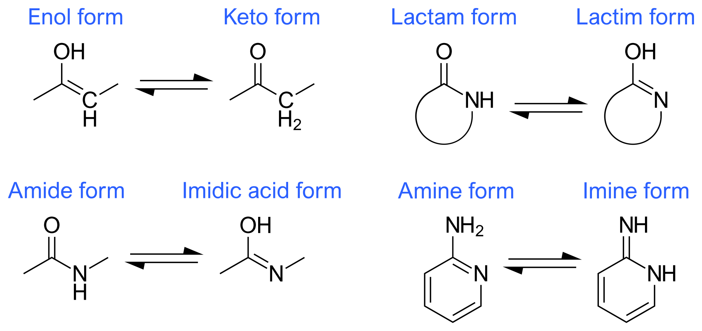

The ISOLDE Command Line¶
While the primary mode of control of ISOLDE is via The ISOLDE GUI, if you prefer you can also perform many tasks via the command line, such as launching the GUI (isolde start), starting, stopping and pausing simulations (isolde sim), and performing basic manipulations (isolde pepflip and isolde cisflip). Some functions are currently available only through the command line - in particular, Adaptive Restraint Schemes.
isolde tutorial¶
Brings up the ISOLDE Tutorials help page, providing interactive case studies for working on models in ISOLDE.
isolde demo¶
Syntax: isolde demo demoName [modelOnly true/false] [startIsolde true/false]
Primarily intended for use with the ISOLDE tutorials. Loads saved atomic coordinates for use in rebuilding.
demoName: either “cryo_em” or “crystal”
modelOnly: if true, load only the model and not the electron density map
startIsolde: if true, the ISOLDE GUI will be started.
isolde start¶
Brings up The ISOLDE GUI. The first model in the list of open models will be automatically prepared with ISOLDE’s default visualisation mode. This also sets the display camera to orthographic projection and lighting to simple. It is strongly recommended that you do not change these settings during your ISOLDE session.
isolde set¶
Syntax: isolde set [timeStepsPerGuiUpdate integer] [temperature number] [gpuDeviceIndex integer]
Change various ISOLDE global settings.
isolde reset forcefield¶
Delete cached forcefield files to reset to the as-installed state.
isolde report¶
Sytax: isolde report [true|false (true)] [interval integer (20)]
Start/stop reporting information on simulation performance (time per coordinate update and timesteps per second) to the status bar. The optional interval argument sets the number of coordinate updates to average over before reporting. Only valid while a simulation is running, and automatically terminates once that simulation stops.
isolde select¶
Syntax: isolde select model
Set the specified model as ISOLDE’s current selected model. If the target model has not already been initialised for control by Clipper to provide ISOLDE’s standard view, this command will cause that to happen.
isolde sim¶
Syntax: isolde sim cmd [atoms] [discardTo discardTo]
Start, stop or pause an interactive simulation.
isolde sim start [atoms]¶
Launches the ISOLDE GUI if not already running, and starts a simulation. If no atoms are specified, the simulation will encompass the entirety of the current selected model (or the first open model if ISOLDE is not already running). If atoms is specified, the selected atoms must come from a single model (if this is not the current selected model, ISOLDE will automatically switch).
isolde sim stop [discardTo discardTo]¶
discardTo: one of “checkpoint” or “start”
Stop the currently running simulation, and optionally discard the results. If discardTo is not specified, the current state of the model will be kept. Otherwise, the atomic positions and states of all restraints will be reverted either to the starting state or the last saved checkpoint.
isolde sim pause¶
Pauses the current simulation.
isolde sim resume¶
Resumes a paused simulation.
isolde pepflip¶
Syntax: isolde pepflip atoms
Attempt to flip the peptide bond N-terminal to each selected residue, starting a suitable simulation if none is currently running. Requires ISOLDE to already be initialised. Residues outside the model currently selected for ISOLDE (or outside the mobile selection if a simulation is running) will not be flipped.
isolde cisflip¶
Syntax: isolde cisflip atoms
Attempt to flip the peptide bond N-terminal to each selected residue from cis to trans or vice versa, starting a suitable simulation if none is currently running. Requires ISOLDE to already be initialised. Residues outside the model currently selected for ISOLDE (or outside the mobile selection if a simulation is running) will not be flipped.
isolde ignore¶
Syntax: isolde ignore residues
Tell ISOLDE to ignore a selection of residues in future simulations. This will not take effect until the next simulation is started. Ignored residues will still be used for structure factor calculations, but do not take part in simulations in any way. Atoms directly bonded to an ignored residue will be fixed in space. This command is most useful in dealing with severe clashes that are otherwise intractable (e.g. docked homology models with intertwined loops):
select one of the clashing chains
isolde ignore sel to ignore it
start a simulation and remodel its counterpart into density
stop the simulation, then isolde ~ignore to clear the list of ignored residues
if necessary, ignore the selection you just remodelled and run a simulation to fix the other side of the problem area
stop any running simulation, isolde ~ignore, then run a final simulation with everything included to resolve any remaining clashes.
isolde ~ignore¶
Syntax: isolde ~ignore residues
Tell ISOLDE to stop ignoring a selection of residues for simulation purposes. This will not take effect until the next new simulation is started.
isolde stepto¶
Syntax: isolde stepto [residue or {next|prev}] [viewDistance number] [interpolateFrames integer] [polymericOnly {TRUE|false}]
Focus the camera on the specified residue, or the next/previous residue in the chain if no residue is specified. isolde stepto next will move the camera to the next residue in the model, while isolde stepto prev will move back to the previous one. The stepper will remember the last specified direction, so repeated calls of “isolde stepto” without arguments will keep moving along the chain in the same direction. Providing the viewDistance argument will cause the camera to zoom in/out to the specified distance; this distance will be maintained for future calls. If the current camera position is close, the view will slide smoothly to the new position over interpolateFrames frames, otherwise it will jump directly there. If polymericOnly is true (default), any residues not part of a protein or nucleic acid chain will be skipped. As for the other arguments, this will be remembered for all future calls.
Each loaded model is given its own independent residue stepper - the settings you make for one will not be carried over to others.
isolde jumpto¶
Syntax: isolde jumpto [next|prev]
Jump the residue stepper to the first residue of the next chain, or last residue of the previous chain.
isolde add aa¶
Syntax: isolde add aa 3-character resname [residue] [addDirection C|N] [structure model ID] [chainID string] [number integer] [addBFactor float] [occupancy float (1.0)] [approxConformation helix|strand (strand)]
Add an amino acid either to an existing terminal residue, or as a new chain or chain fragment. At its simplest, with a single terminal residue selected “isolde add aa ALA sel” will add an alanine residue to the terminus. By default, the B-factors of the new atoms will be the average B-factor of the backbone and CB atoms of the residue it attaches to; this can be adjusted up or down using the addBfactor argument. The approxConformation argument seeds the phi and psi angles for the new residue to alpha-helical or beta-strand geometry; as the name suggests the result is very approximate and will need energy minimisation.
The addDirection argument is only required if the target existing residue is unbonded on both the N and C atoms.
If residue is not specified, then structure, chainID and number must all be provided. The new residue will be placed at the current centre of rotation.
isolde add ligand¶
Syntax: isolde add ligand {residue ID} [model] [position list of three floats] [bfactor number] [chain string] [distanceCutoff number] [simSettle {true|FALSE}] [useMdTemplate {TRUE|false}] [mdTemplateName string]
NOTE: when placing ligands using this command, ISOLDE does not currently make any attempt at a preliminary fit prior to starting simulations - it will simply place the “ideal” coordinates specified in the template file. When adding large, flexible ligands this will almost always lead to severe clashes with the surroundings. In such cases, it is advisable to use isolde ignore ~sel to exclude everything but the ligand from simulations, perform an initial fit to the density using tugging and/or position restraints on key atoms, then use * **isolde ~ignore* to reinstate the rest of the model for simulations and continue on.
Add a ligand based on its template in the Chemical Components Dictionary. The residue ID must match the 3-letter code for the ligand (if you don’t know this, you can search for it at http://ligand-expo.rcsb.org/). If ISOLDE is started, then the model argument is optional (if not provided, the ligand will be added to ISOLDE’s currently selected model). Otherwise, you will need to explicitly specify the model to add to. By default, the ligand will be added at the current centre of rotation; you may, however, specify an alternative location by providing coordinates as a comma-separated list after the position keyword.
By default, the b-factor and chain assigned to the residue will be determined based on the closest atoms within distanceCutoff (default: 8 Angstroms) to the site of addition, but you may explicitly specify these if you wish. If simSettle is true, a local simulation will automatically be started - this is only advisable for small, rigid molecules for which severe clashes with the surroundings are unlikely.
If useMdTemplate is true, the added residue will be checked against the corresponding molecular dynamics template (if present), and atoms will be added or removed as needed to match (templates provided by the CCD are often not in the protonation states most common under biological conditions). You should not usually need to use the mdTemplateName argument: if you have loaded a custom template, it will be found and used as long as its name matches the residue name.
isolde add water¶
Syntax: isolde add water [model] [position list of three floats] [bfactor number] [chain string] [distanceCutoff number] [simSettle {TRUE|false}]
Essentially a special case of isolde add ligand. The primary difference is that simSettle defaults to true (that is, adding a water will automatically start a local simulation to settle it). In addition, the default value for distanceCutoff is reduced from 8.0 to 3.0 Angstroms, on the basis that it is rarely a good idea to add a water outside of hydrogen bonding distance from the nearest existing atom(s).
isolde replace ligand¶
Syntax: isolde replace ligand residue newResidueName
(EXPERIMENTAL)
Replace one ligand with a related one, keeping as many atoms common to both as possible. Matching of common atoms is performed by graph matching based on bonding between elements. Use with caution: the current implementation is not aware of bond order nor of chirality, so attempting to replace (for example) a D-sugar with its L-enantiomer will simply rename the residue while retaining the D coordinates. This will be improved upon in a future release.
isolde adjust bfactors¶
Syntax: isolde adjust bfactors float [atoms]
Increase/decrease B-factors of a set of atoms by the chosen amount. If no atoms are specified, the change will be applied to all currently-selected atoms. Will raise a UserError if the change would reduce any B-factor below zero.
isolde modify his¶
Syntax: isolde modify his residues {ND|NE|both}
Modify one or more histidine residues to place the hydrogen on the specified atom. Should not be used while a simulation is running.
isolde parameterise¶
Syntax: isolde parameterise residues [override true|FALSE] [netCharge integer] [alwaysRaiseErrors TRUE|false]
Parameterise one or more ligands for ISOLDE with the AMBER GAFF2 force field using ANTECHAMBER. Limitations:
Only applicable to molecules with no covalent bonds to other ligands/residues
Only supports molecules made up of the elements C, N, O, S, P, H, F, Cl, Br, or I
Hydrogens must be present and correct (it is up to you to ensure this)
For ligands with multiple possible protonation states, only one protonation state is currently supported per residue name.
Unless you know what you’re doing, the ligand should be complete (if you do truncate it, all instances of ligands with the same residue name will need to be truncated in the same way)
Note that the time taken by ANTECHAMBER scales with (number of atoms)^3 - while for small molecules with less than a dozen or so heavy atoms it will typically complete in under a minute, for larger molecules such as phospholipids it can easily take over an hour.
The resulting parameters will be written into files, one for each residue type, called {resname}.xml. If ISOLDE is already running these will be automatically added to its forcefield so those ligands should “just work” for the remainder of the session; for future sessions use the “Load residue MD definition(s)” button to add them.
By default, if parameters for a residue with the same name already exist they will not be recalculated; this can be changed by setting override to true.
In almost all cases the net charge on the molecule is estimated correctly by ChimeraX; if ANTECHAMBER fails with an error message in the Log mentioning an odd number of electrons, the most likely explanations are:
There is something wrong with your molecule (too many/too few hydrogens). Double-check or, if necessary, load a trusted exemplar and parameterise against that. Pay particular attention to ionisable groups and potential H-bonds with surrounding molecules. Note that some groups are capable of tautomerisation: Distinguishing between these should be done with great care and the application of chemical knowledge - in most such cases one tautomer is strongly preferred so alternatives should be considered only in the presence of strong stabilisation by surrounding interactions.
ChimeraX incorrectly guessed the charge. If you know what it should be, you can specify it with the netCharge argument.
Your molecule is actually some form of stable radical. These are not supported by ANTECHAMBER - you will need to turn to some more in-depth QM method to parameterise it.
If alwaysRaiseErrors is true, then a failure to parameterise any given residue will raise a UserError halting the pipeline at that point. If it is false then any errors will be printed as warnings to the log, and parameterisation will still be attempted for any remaining residues.
isolde shorthand¶
Syntax: isolde shorthand
Enables a set of shorthand aliases to commonly-used ISOLDE commands, and prints a summary to the log. Note: you can permanently enable this by going to Favorites/Settings on the ChimeraX menu, choosing the “Startup” tab and adding “isolde shorthand” to the box labelled “Execute these commands at startup”.
The current list of shorthand commands is as follows:
Alias |
Equivalent full command |
|---|---|
st |
isolde step {arguments} |
aw |
isolde add water {arguments} |
awsf |
isolde add water {arguments} sim false |
al |
isolde add ligand {arguments} |
aa |
isolde add aa $1 sel {arguments} |
ht |
isolde mod his sel {arguments} |
so |
setattr sel atoms occupancy {arguments} |
ab |
isolde adjust bfactors {arguments} |
ss |
isolde sim start sel |
rt |
isolde release torsions sel {arguments} |
rd |
isolde release distances sel {arguments} |
ra |
rd; rt |
pf |
isolde pepflip sel |
cf |
isolde cisflip sel |
cbb |
color bfactor {arguments} |
cbo |
color byattr occupancy {arguments} |
cbc |
color {arguments} bychain; color {arguments} byhet |
cs |
clipper set contourSensitivity {arguments} |
isolde write phenixRefineInput¶
Syntax: isolde write phenixRefineInput model ID [modelFileName filename] [paramFileName filename] [includeHydrogens true|FALSE] [numProcessors integer (1)] [numMacrocycles integer (6)] [nqhFlips true|FALSE] [scatteringType xray|electron|neutron (xray)]
(IMPORTANT NOTE: This command will only work correctly for crystallographic datasets - for cryoEM models use the “isolde write phenixRsrInput” command)
(NOTE: ISOLDE does not provide Phenix-compatible restraints for non-standard residues and ligands. If you have any )
Writes a model file defined by modelFileName (default: {model name}_for_phenix.cif), a reflections file ({model name}_for_phenix.mtz) and a parameter file defined by paramFileName (default: refine.eff) with settings pre-defined to those that typically work best for models coming from ISOLDE. To use the result you will need to have Phenix installed; navigate to the working directory in a terminal window and run:
phenix.refine {parameter file}.eff
(instructions for this will be written to the log.)
Specifically, the model is used as its own reference for torsion restraints, and rotamer, Ramachandran and secondary structure restraints are disabled. Additionally, automatic weighting of X-ray/XYZ and X-ray/adp terms is enabled. The aim is to limit the refinement to only subtle movements, primarily tightening the bond and angle distributions while maintaining the overall geometry of your model. Note that Phenix’s approach to automatic weighting involves running a number of refinements (typically 12) at each step and choosing the best result. In Unix environments the numProcessors argument allows these to run in parallel. By default, hydrogens are not passed to Phenix; you can change this by setting includeHydrogens to true, but this may on occasion fail in Phenix due to incorrectly-named hydrogens on some non-standard residues. This will be addressed in a future version.
isolde write phenixRsrInput¶
Syntax: isolde write phenixRsrInput model ID resolution map ID [modelFileName filename] [paramFileName filename] [restrainPositions true|FALSE] [includeHydrogens true|FALSE]
(IMPORTANT NOTE: This command will only work correctly for cryo-EM maps - for crystallographic datasets use the “isolde write phenixRefineInput” command)
Writes a model file defined by modelFileName (default: {model name}_for_phenix.cif) and a parameter file defined by paramFileName (default: refine.eff) with settings pre-defined to those that typically work best for models coming from ISOLDE. To use the result you will need to have Phenix installed; navigate to the working directory in a terminal window and run:
phenix.real_space_refine {parameter file}.eff
(instructions for this will be written to the log.)
Specifically, the model is used as its own reference for torsion restraints, and rotamer, Ramachandran and secondary structure restraints are disabled. Additionally, the refinement strategy is limited to global minimisation and B-factor (ADP) refinement - most importantly, grid searching (i.e. automated searching of different side-chain conformations) is disabled. The aim is to limit the refinement to only subtle movements, primarily tightening the bond and angle distributions while maintaining the overall geometry of your model.
The map ID argument should correspond to a map loaded from a file, not one generated by ChimeraX (e.g. via the “volume gaussian” command). Usually, this will be a map associated with the model via Clipper, but that is not a necessity. If you have only a single map associated with your model you can specify it with just the top-level identifier (e.g. “#1”); if you have multiple maps associated you will need to burrow down in the Models viewer to identify the correct one (should be #x.1.1.y where x is your top-level model identifier and y is the actual map you want).
The resolution should correspond to the nominal resolution of the map (i.e. as reported in the wwPDB or EMDB entry, or the 0.143 FSC level if you’re working on a new dataset). Unfortunately this isn’t stored in any reliable way in existing formats, so ChimeraX doesn’t automatically know what it is. The value you specify will affect some of the weighting decisions made by phenix.real_space_refine.
Setting the restrainPositions argument to true instructs phenix.real_space_refine to restrain all heavy atoms to their starting positions using top-out restraints, on top of the default torsion restraints. This can be useful where your model includes domains fitted into very weak or fuzzy density.
By default, hydrogens are not passed to Phenix; you can change this by setting includeHydrogens to true, but this may on occasion fail in Phenix due to incorrectly-named hydrogens on some non-standard residues. This will be addressed in a future version.
isolde write refmacRestraints¶
Syntax: isolde write refmacRestraints model ID [distanceCutoff number (4.5)] [includeWaters true|FALSE] [fileName filename (RESTRAINTS.txt)]
Writes a REFMAC input file similar to one generated by ProSMART to restrain heavy atom interatomic distances to their current values. Note that this does not write the model itself - you should save that separately. The resulting file can be used via the CCP-EM GUI, or at the command line via:
refmac5 {all other command-line arguments} < filename
The distanceCutoff argument specifies the maximum distance between atoms to be restrained. The default value is the same as that used by ProSMART. Note that the total number of restraints blows out extremely rapidly with increasing distanceCutoff, so increasing this value substantially would be inadvisable.
isolde reset forcefield¶
Syntax: isolde reset forcefield
Reload ISOLDE’s forcefield from scratch. This removes the cached version (stored as a pickle file for faster startup) and reloads everything from the original ffXML files. Any custom ligand definitions loaded in this session will need to be re-loaded if you wish to continue using them. This command exists mostly for developer/debugging use and is primarily used when testing modifications/additions to the core force field.
isolde benchmark¶
Syntax: isolde benchmark [maxSize (small|medium|large|huge)] [outputFile (filename|browse)] [warningDialog (TRUE|false)] [maxCoordUpdates number (120)] [minCoordUpdates number (10)] [maxSimTime number (300)]
Runs a series of predefined simulations on selected models from the wwPDB and generates a performance report. This is designed to run non-interactively and can take a while to run (particularly for the first time, since the models and their maps/structure factors are downloaded from the wwPDB). For each model, ISOLDE will first run a simulation of the entire structure, followed by a simulation seeded from a single selected atom near the model centre (more representative of day-to-day use).
Running statistics are printed to the ChimeraX log, and written as text to the file defined by outputFile (if outputFile is not specified, the file will be written to isolde_benchmark.log in the current working directory). As for most other ChimeraX commands involving filenames, the argument outputFile browse will open a system file browser allowing you to choose a directory and filename.
maxSize defines the largest set of models to benchmark against. Particularly on slower machines/connections it is advisable to avoid the huge benchmarks, since the time needed for these models is almost as much as the others put together. The benchmarks that will actually be run are:
Size |
Crystal benchmark |
Cryo-EM benchmark |
|||
|---|---|---|---|---|---|
. |
PDB ID |
Details |
PDB ID |
EMDB ID |
Details |
small |
3io0 |
229 residues, 3.0 Å |
7rzq |
24774 |
322 residues, 2.09 Å |
medium |
6nak |
1383 residues, 3.14 Å |
8ehg |
28147 |
1372 residues, 2.24 Å |
large |
8cjh |
2892 residues, 2.98 Å |
7nhs |
12339 |
4176 residues, 2.30 Å |
huge |
5zju |
11290 residues, 2.80 Å |
7oyb |
13112 |
15830 residues, 2.40 Å |
By default, executing this command brings up a warning dialog asking you not to interact with ChimeraX while the benchmarks are running. To skip this, use the argument warningDialog false.
For each benchmark simulation, a timer will start at the moment of initialisation (the equivalent of a user pressing the “play” button). Once energy minimisation is complete, the simulation will continue until at least minCoordUpdates equilibration steps have occurred. If the elapsed time is still less than maxSimTime the simulation will continue until either maxCoordUpdates or maxSimTime is reached.
An example of the output file format is below:
OpenGL version: 3.3.0 NVIDIA 528.24
OpenGL renderer: NVIDIA GeForce RTX 3070 Laptop GPU/PCIe/SSE2
OpenGL vendor: NVIDIA Corporation
Manufacturer: HP
Model: HP ZBook Studio 15.6 inch G8 Mobile Workstation PC
OS: Microsoft Windows 11 Pro (Build 22621)
Memory: 34,007,068,672
MaxProcessMemory: 137,438,953,344
CPU: 16 11th Gen Intel(R) Core(TM) i7-11800H @ 2.30GHz
OSLanguage: en-GB
Simulation timesteps per coordinate update: 50
Nonbonded cutoff distance: 1.7 nm
Using implicit solvent: True
Implicit solvent cutoff distance: 2.0 nm
PDB ID: 3io0
====================
Selection string: #1.2
Simulated atom count: 3351
Platform: CUDA
Time to first coord update: 2.1929705142974854
Minimization time: 0.8542594909667969
Time per coord update (mean): 0.04789997107230577
Time per coord update (std): 0.021273512718791954
Time per x-ray map recalculation (mean): 0.5596075739179339
Time per x-ray map recalculation (std): 0.2632701705724466
Time per graphics update (mean): 0.04160166902151721
Time per graphics update (std): 0.022757995120602312
Time per graphics update (slowest): 0.27135753631591797
----------
Selection string: #1.2/A:126
Simulated atom count: 2707
Platform: CUDA
Time to first coord update: 1.8390088081359863
Minimization time: 0.09216737747192383
Time per coord update (mean): 0.04065220307983808
Time per coord update (std): 0.011054394755417534
Time per x-ray map recalculation (mean): 0.6834243403540717
Time per x-ray map recalculation (std): 0.4560358955934349
Time per graphics update (mean): 0.03488120729523587
Time per graphics update (std): 0.013481108798147958
Time per graphics update (slowest): 0.09042668342590332
----------
PDB ID: 7rzq
====================
Selection string: #1.2
Simulated atom count: 4913
Platform: CUDA
Time to first coord update: 2.601433038711548
Minimization time: 1.1442956924438477
Time per coord update (mean): 0.048584105984476586
Time per coord update (std): 0.004660827155869477
Time per graphics update (mean): 0.018363032763517355
Time per graphics update (std): 0.006425427330208577
Time per graphics update (slowest): 0.04839634895324707
----------
Selection string: #1.2/C:959
Simulated atom count: 1946
Platform: CUDA
Time to first coord update: 1.6841599941253662
Minimization time: 0.11556077003479004
Time per coord update (mean): 0.03128157526054638
Time per coord update (std): 0.0032794936655442634
Time per graphics update (mean): 0.017639152119668683
Time per graphics update (std): 0.004657657000208569
Time per graphics update (slowest): 0.04112887382507324
----------